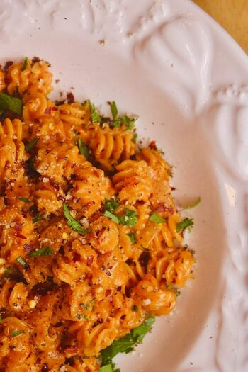

Vodka Sauce with Rigatoni

What is Vodka Sauce?
Vodka sauce is a creamy, tomato-based sauce that is typically made with heavy cream, crushed tomatoes, garlic, onion, and vodka. The sauce is typically served over pasta and is known for its slightly sweet and tangy flavor. Some variations may also include Parmesan cheese and red pepper flakes for added flavor. It is a popular sauce for pasta dishes, particularly with penne pasta.
Ingredients
- 1 onion, diced
- 2-3 tablespoons extra virgin olive oil
- Pinch of kosher salt to taste
- Freshly ground black pepper
- Red pepper flakes, to taste
- Dried oregano, to taste
- Dried thyme, to taste (optional)
- 2 cloves of garlic, peeled
- 1 (4.5 oz) tube of tomato paste
- 1/3 cup vodka
- 1 cup heavy cream
- 1 lb rigatoni or penne pasta
- Generous salt for pasta water
- Freshly grated parmigiano reggiano cheese (at least a 1/2 cup)
- 2 tablespoons butter
- Chopped fresh parsley to taste
Steps
- Heat a large pot of water to cook your pasta. While it heats, start making the sauce.
- Cook your onion with the olive oil and salt in a large pan over medium heat until translucent and slightly golden. Add black pepper, red pepper flakes, oregano, and thyme and cook 1-2 more minutes. Add in the garlic.
- Add the tomato paste and continue to cook over medium heat for 2-3 more minutes. Stir continuously with a wooden spoon or silicone spatula.
- Add the vodka; let it simmer briefly before adding the heavy cream. Turn off the heat once the cream simmers for a minute. Use a spoon to remove the garlic cloves that have now infused the sauce.
- Salt the pasta water once it's boiling and add in your rigatoni. Cook 2-3 minutes less than the lower number on the package. Use a mug to reserve at least a half cup of pasta water before draining the pasta.
- Mix the drained pasta into the pan with the sauce, along with a splash of pasta water and a generous amount of parmigiano reggiano and the butter. Return the pan to heat, and let the pasta simmer in the sauce for the last couple minutes of its cook time. Add the parsley and enjoy.